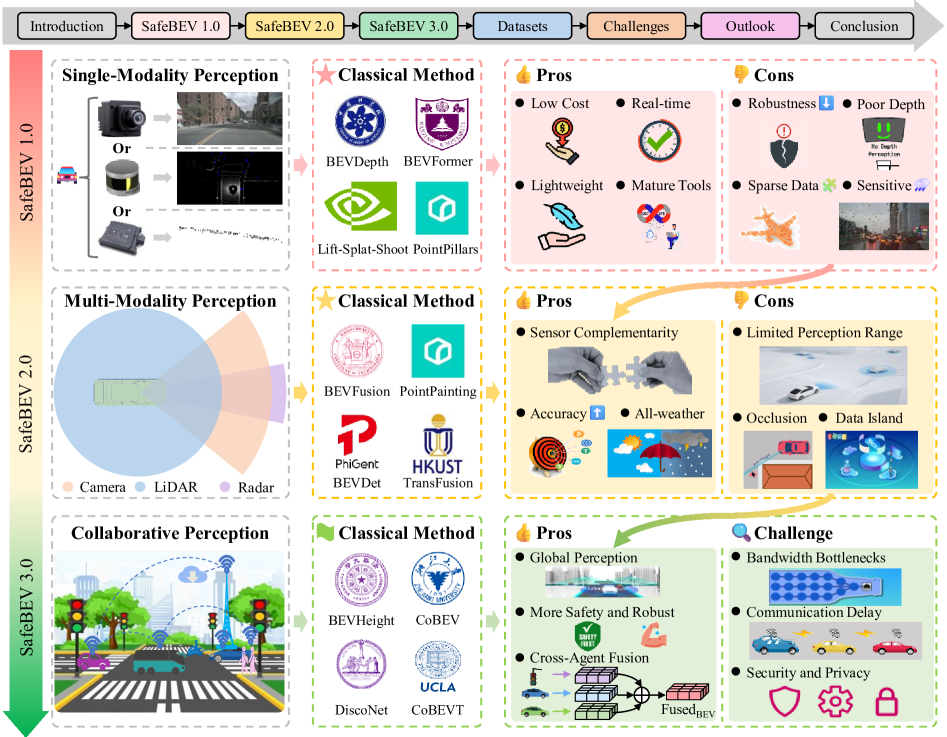

本論文は、自動運転におけるBEV（Bird's-Eye View：鳥瞰図）知覚の最新動向と将来展望をまとめたサーベイである。著者はJunhui Zhao、Jingyue Shi、Li Zhuoで、Elsevier Expert Systems With Applications誌に掲載されている（doi: 10.1016/j.eswa.2024.125103）。論文はペイウォール下にあるため、以下は公開情報に基づく詳細な解説である。
BEV知覚とは
BEV（Bird's-Eye View）知覚とは、カメラやLiDARなどの複数センサーから取得したデータを、車両を上から見下ろした統一的な2D平面表現（鳥瞰図）に変換し、その表現上で物体検出・セマンティックセグメンテーション・走行可能領域推定・運動予測などを行う手法の総称である。BEV表現は複数センサーのデータを統一的な座標系に統合できる点で優れており、エンドツーエンド自動運転システムの知覚モジュールとして2020年代初頭から急速に普及した。
BEV知覚が注目される背景
従来の自動運転知覚は、物体検出をカメラ視点（透視図）もしくはLiDARの点群空間で独立に行う手法が主流であった。しかし、この方式には次の課題がある。
複数カメラの情報を統合する際に視点変換コストが高い
カメラとLiDARの融合が困難
下流タスク（計画・制御）との接続性が低い
BEV表現はこれらの課題を解消し、センサーフュージョンを自然に行える統一フレームワークを提供する。Tesla、Wayve、Li Auto、Huaweiといった企業が実用車両に採用したことで、産業界でも広く認知されるようになった。
主要な手法カテゴリ
カメラベースBEV手法
純カメラ入力からBEV特徴を生成する手法群である。主要な変換戦略として以下がある。
IPM（Inverse Perspective Mapping） ：道路面が平坦であるという幾何的仮定を用いた古典的変換LSS（Lift, Splat, Shoot） ：深度分布を予測して2D特徴を3Dに「持ち上げる」アプローチ。BEVDetやBEVDepthなどの後継手法の基礎となったクロスビューアテンション ：Transformerを用いて鳥瞰図クエリを画像特徴に対応付けるアプローチ。BEVFormer、DETR3Dなどがこの系統に属するアテンションベース時間融合 ：BEVFormerに代表される、過去フレームの時間情報を現在フレームに組み込む手法
LiDARベースBEV手法
LiDAR点群を直接BEV空間に投影・処理する手法群である。
PointPillars ：点群を柱状（pillar）に量子化した高速BEV処理手法CenterPoint ：BEV特徴マップ上でヒートマップ中心点検出を行う手法。ロバスト性と精度で広く採用されたVoxelNet / SECOND ：ボクセル化とスパース畳み込みを組み合わせた手法群
マルチモーダルフュージョン手法
カメラとLiDARのそれぞれの強みを活かした融合手法も重要なカテゴリである。
BEVFusion（MIT/MIT-HAN） ：カメラBEVとLiDAR BEVを特徴空間で統一的に融合する代表的手法TransFusion ：LiDAR中心のTransformerにカメラ情報を組み込む手法
評価ベンチマーク
BEV知覚研究の進展を支えた主要ベンチマーク群を以下に示す。
nuScenes ：6カメラ＋LiDAR構成の3D検出・追跡ベンチマーク。BEV手法の標準評価舞台となったWaymo Open Dataset ：高品質なLiDAR・カメラデータを提供する大規模ベンチマークKITTI ：自動運転研究の歴史的な基盤ベンチマークArgoverse ：モーション予測とHDマップ情報を含むデータセット
将来展望
サーベイは複数の将来方向を提示している。
スケーラビリティの向上 ：より大規模なデータと計算資源を活用した基盤モデルの構築長距離・高解像度BEV ：現行手法の近距離バイアスを克服するための技術開発動的物体予測との統合 ：静的なBEV知覚から、将来状態予測を含む動的シーン理解へ計算効率の改善 ：リアルタイムデプロイに向けたモデル軽量化・高速化占有予測との融合 ：BEV上でのオブジェクトレベル検出と密な3Dオキュパンシー予測の統合エンドツーエンド統合 ：知覚から計画・制御までをBEV空間で一貫して扱うシステム設計
研究上の意義
BEV知覚は、現代の自動運転スタックにおいてほぼ標準的な知覚フォーマットとなっており、その研究動向の体系的な把握は研究者・エンジニア双方にとって重要である。本サーベイは最新手法の位置付けと課題を整理し、BEV知覚研究のロードマップとして機能する。特に、カメラベース・LiDARベース・フュージョンベースの3系統を横断的に比較している点で、実装の方向性を判断するための基礎資料として活用できる。